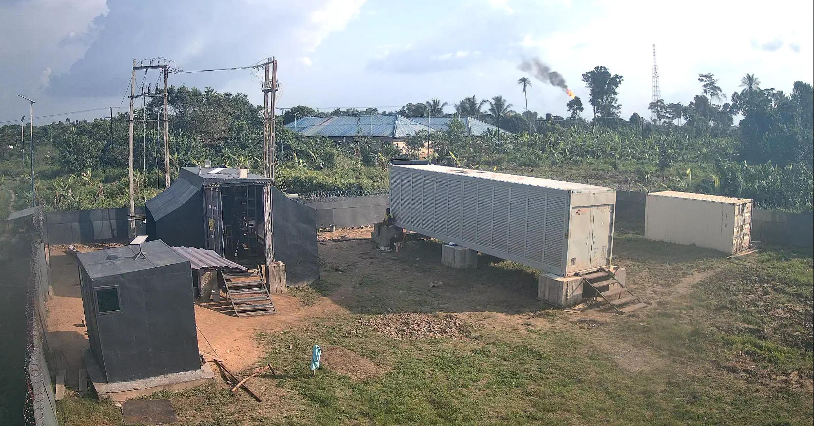
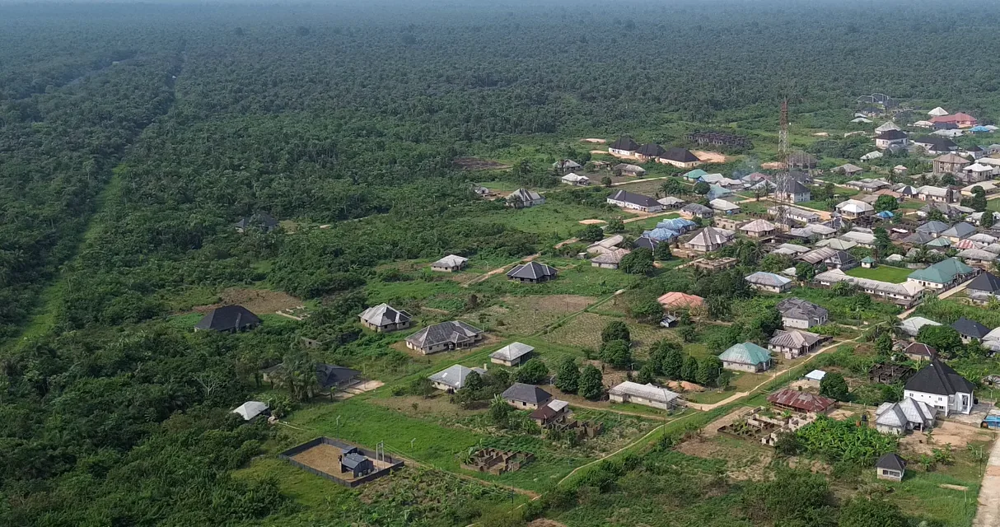

An off-grid data center running on flared gas since February 2025
Since February 2025, NRG Bloom has run a modular, off-grid data center in Ogboinbiri, Bayelsa State, Nigeria, powered by gas that was being flared for zero value. The site is energized at 1 MW, has held 94% uptime, and pays the local community for the power it uses. This is the record of how it was built and what it has demonstrated.
Flared Gas With No Route to Market
Global gas flaring reached 151 billion cubic meters in 2024, the highest level since 2007, releasing 389 million tonnes of CO2e and wasting energy worth roughly $63 billion.1 Nigeria is among the nine countries responsible for the large majority of it.
Nigeria's flared volume rose 12% in 2024, the second largest increase of any country in the world, while its oil production grew only 3%. Flaring intensity rose 8%. It was the second consecutive year of increase.1
The reason matters more than the number. The World Bank attributes roughly 60% of Nigeria's flaring to facilities operated by NNPCL and smaller companies that have limited expertise or funding for gas utilization.1 The gas is not flared because operators want to flare it. It is flared because there is no pipeline, no grid interconnect, and no economical offtake, and because building one is beyond what most of these operators can fund.
Conventional data center development cannot reach these sites either. It commits large capital upfront to a location with no proven power reliability, no track record, and no operating history. So the gas keeps burning.

Stage-Gated, De-Risked
NRG Bloom deploys containerized, modular compute directly at the gas source, then advances the site through three gates. Capital only moves forward when the gate behind it has been cleared.
Stage 1: Validate
Bitcoin mining is deployed first. It is location-agnostic, tolerant of variable power, and generates revenue inside a 60 to 90 day window. It proves energy reliability, site security, and offtake economics before any capital-intensive hardware is committed. If a site fails validation, the equipment is redeployed with minimal loss.
Stage 2: Harden
Operations are optimized for a remote, tropical, off-grid site: preventive maintenance, logistics, local workforce capability, and PUE improvement against a target below 1.2. This builds the availability profile that higher-value workloads require.
Stage 3: Scale to AI
Proven, hardened sites are upgraded toward GPU infrastructure for AI inference, which commands higher margins on the same energy source. The site has already demonstrated reliability, security, and operational maturity before this capital is committed.
Revenue From Gas You Were Burning
The gas operator earns revenue from gas it was flaring for nothing, under a shared-revenue model, with no route-to-market capital required from them. NRG Bloom brings the containers, the compute, the operating team, and the capital.
Flaring is reduced at the wellhead. That aligns with Nigeria's own gas flaring reduction commitments and with the World Bank's Zero Routine Flaring by 2030 initiative, which Nigeria has endorsed.2
The site is powered under a community-based power purchase agreement at $0.03 per kilowatt-hour. The community is paid for the power the site consumes.

Validated Before Committed
Ogboinbiri is the working proof of the thesis. Capital advances into a location only after that location has demonstrated power reliability, uptime, and revenue. Each incremental dollar deploys against an operating record rather than a projection.
Most companies in the stranded-energy compute conversation have never commissioned a site. The difference between a thesis and an operating asset is eighteen months of logistics, humidity, corrosion, security discipline, community relations, and an energy source whose pressure, composition and flow require continuous measurement and response. None of that can be learned from a spreadsheet, and none of it can be bought quickly.
The full metric set, unit economics, and stage-gate detail are published openly.
What the Site Returns
Five local jobs have been created at Ogboinbiri under a local-first hiring policy with skills transfer. The site pays the community for its power under a community-based agreement rather than extracting it.
By displacing routine flaring with productive combustion, the deployment has mitigated more than 300 tonnes of CO2e to date. The activity aligns with UNFCCC CDM methodology AM0009, recovery and utilization of gas from oil fields that would otherwise be flared or vented.3
To be precise about what that does and does not mean: no carbon credits have been issued for this site, and the mitigation figure is not third-party verified. NRG Bloom does not claim a carbon-negative position. The figure is reported as measured, and the verification pathway is open.

References
- World Bank Global Gas Flaring Reduction Partnership, 2025 Global Gas Flaring Tracker Report, July 2025. Global flaring of 151 bcm in 2024, 389 Mt CO2e emitted, approximately US$63 billion of wasted energy at 2024 EU import gas prices. Nigeria: 12% increase in flared volume against 3% oil production growth, 8% increase in flaring intensity, second largest volume increase globally, second consecutive annual increase. Approximately 60% of Nigerian flaring attributed to NNPCL-operated facilities and smaller companies with limited expertise or funding for gas utilization. worldbank.org
- World Bank, Zero Routine Flaring by 2030 Initiative. worldbank.org
- UNFCCC Clean Development Mechanism, methodology AM0009, Recovery and utilization of gas from oil fields that would otherwise be flared or vented. AM0009 is a UNFCCC CDM methodology, not a Verra VCS methodology. cdm.unfccc.int
Operating figures on this page are as of August 2026 and are NRG Bloom's own measurements unless otherwise attributed. The PUE figure below 1.2 is a design target, not an operating result. The 5 MW referenced elsewhere on this site is pipeline under development, not energized capacity.